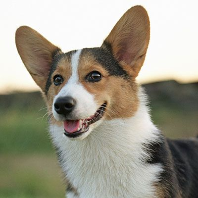

<ion-header >
  <ion-toolbar color = "secondary">
    <ion-buttons slot="start">
      <ion-button fill="clear" color="dark">
        <ion-icon slot="icon-only" name="settings"></ion-icon>
      </ion-button>
    </ion-buttons>
    <ion-title class="ion-text-center">
      
    </ion-title>
    <ion-buttons slot="end">
      <ion-button fill="clear" color="dark">
        <ion-icon slot="icon-only" name="person"></ion-icon>
      </ion-button>
    </ion-buttons>
  </ion-toolbar>
</ion-header>

<!-- <ion-content color = "medium" >  
  <ion-slides #slides pager="true">
    <ion-slide class="bg-1">
      
      <h4 class="centered wrap-text"><b>Millie, 3 </b><ion-icon name="checkmark-circle" color="tertiary"></ion-icon>
        </h4>
    </ion-slide>
    <ion-slide class="bg-1">
      
      <h4 class="centered wrap-text"><b>Rene, 2</b><ion-icon name="checkmark-circle" color="tertiary"></ion-icon></h4>
    </ion-slide>
    <ion-slide class="bg-1">
      
      <h4 class="centered wrap-text"><b>Jock, 4</b><ion-icon name="checkmark-circle" color="tertiary"></ion-icon></h4>
    </ion-slide>
    <ion-slide class="bg-1">
      
      <h4 class="centered wrap-text"><b>Marc, 8</b><ion-icon name="checkmark-circle" color="tertiary"></ion-icon></h4>
    </ion-slide>
    <ion-slide class="bg-1">
      
      <h4 class="centered wrap-text"><b>Jason, 6</b><ion-icon name="checkmark-circle" color="tertiary"></ion-icon></h4>
    </ion-slide>
    <ion-slide class="bg-1">
      
      <h4 class="centered wrap-text"><b>Mia, 3</b><ion-icon name="checkmark-circle" color="tertiary"></ion-icon></h4>
    </ion-slide>
  </ion-slides>
 
  <div class="button_box">
    <ion-button id="refresh-button" (click)="slides.slideTo(0)" class="large_button" mode="ios" shape="round" fill="solid" >
    <ion-icon color="warning" name="refresh"></ion-icon>
    </ion-button>
    <div class="space"></div>
    <ion-button id="dislike-button" (click)="slides.slideNext()"  mode="ios" class="large_button" shape="round" fill="solid" >
    <ion-icon color="light" name="close"></ion-icon>
    </ion-button>
    <div class="space"></div>
    <ion-button id="like-button" (click)="slides.slideNext()" mode="ios" class="large_button" shape="round" fill="solid">
      <ion-icon color="danger" name="heart"></ion-icon>
    </ion-button>
    <div class="space"></div>
    <ion-button id="location-button" class="large_button" mode="ios" shape="round" fill="solid">
      <ion-icon color="tertiary" name="location-sharp"></ion-icon>
    </ion-button>
  </div>
</ion-content> -->


  <ion-tab-bar color="secondary" slot="bottom">
    <ion-tab-button tab="home">
    <ion-icon color = "dark" name="home"></ion-icon>
    </ion-tab-button>
    <ion-tab-button tab="liked">
      <ion-icon color = "dark" name="paw"></ion-icon>
      </ion-tab-button>
      <ion-tab-button tab="chats">
        <ion-icon color = "dark" name="chatbox"></ion-icon>
        </ion-tab-button>
  </ion-tab-bar>


